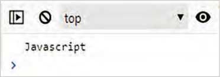
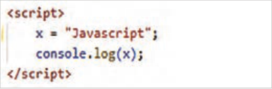
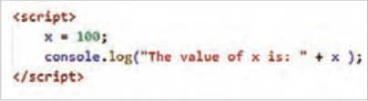
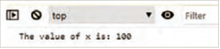
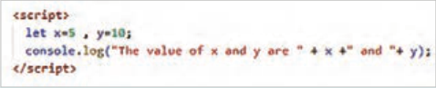
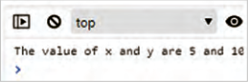
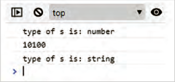
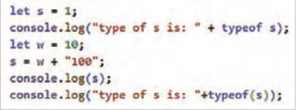
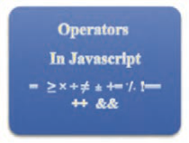

صفحه ۱۹۸
تعریف متغیرها میتواند بهصورت خودکار نیز انجام شود. تعریف خودکار متغیر زمانی انجام میشود که یک متغیر مقداردهی شود.
مثال
در مثال زیر دو متغیر x و z بهصورت خودکار تعریف شدهاند:
;x = 10
;z = x + 10
بیشتر بدانید
ثابتها (constants): ثابتها (const) دارای مقدار ثابتی در طول اجرای برنامه هستند. ثابتها یکبار تعریف و مقداردهی میشوند و بعد از آن امکان مقداردهی مجدد ندارند.
مثال
در مثال زیر، ثابت PI با مقدار 3.141592 تعریف شده است. تغییر مقدار PI در خط دوم و سوم باعث رخداد خطا میگردد.
;const PI = 3.141592
;PI = 3.14
;PI = PI + 10
اصول نامگذاری متغیرها نام متغیر میتواند حاوی حروف الفبای انگلیسی، اعداد، علامت $ و زیرخط (_) باشد، اما در ابتدای نام متغیر نباید از اعداد استفاده شود.
جاوااسکریپت نسبت به کوچکی و بزرگی حروف حساس است، بنابراین اسامی price و Price و PRICE سه متغیر متفاوت هستند.
کلمات رزرو شدۀ جاوااسکریپت (که معنای خاصی دارند)، نباید بهعنوان نام متغیر استفاده شوند، مانند
let و var، if، for و...
جاوااسکریپت امکان تعریف متغیرها را در یک خط نیز فراهم میکند، اما در پایان هر تعریف متغیر، باید از علامت کاما برای جداسازی استفاده شود.
;"let firstName = "Sara", lastName = "Jones", studentId = "1234567
مقداردهی به متغیرها توسط عملگر انتساب (=) انجام میشود. در صورتیکه مقداردهی متغیر انجام نشود، مقدار آن تعریف نشده یا )Undefined) خواهد بود.
فعالیت
مشخص کنید که تعریف متغیرهای زیر بهدرستی صورت گرفته است یا خیر.
..……...… ; myVar = 2 ..………… ;2x = 10
..………… ;"user-name ="Safa
..………… ;var = 20
صفحه ۱۹۹
نمایش مقدار متغیرها و رشتهها برای نمایش مقدار یک متغیر در کنسول مرورگر از دستور console به شکل ٥ استفاده میشود:


با توجه به حساسیت جاوااسکریپت نسبت به کوچکی و بزرگی حروف، نوشتن دستور console.log(X) باعث نمایش پیغام خطای زیر میشود:
برای نمایش یک رشته متنی در کنسول یا صفحه وب، از علائم نقل قول در اطراف متن استفاده میشود، اما متغیرها نیازی به این علائم ندارند. در مثال زیر یک عبارت متنی بههمراه مقدار متغیر x درون کنسول نمایش داده شده است.


در اینجا عملگر + برای چسباندن دو عبارت به یکدیگر استفاده شده است. بسته به نوع دادهها، این عملگر میتواند به عنوان عملگر محاسباتی جمع یا الحاق رشتهها عمل کند.
تعریف متغیر و نمایش آن در جاوااسکریپت
کار کارگاهی
در ادامه اسکریپت فایل workshop1.html متغیرهای x و y را با مقادیر 5 و 10 تعریف کنید و سپس مقدار آنها را در کنسول مرورگر نمایش دهید:


یک متغیر بهصورت زیر ایجاد کنید و سپس مقدار آن را در کنسول نمایش دهید.
;let test
با توجه به اینکه متغیر test مقدار دهی نشده است، درصورتی که از دستور console.log(test) استفاده شود، پیغام ……………… ظاهر میشود.
صفحه ۲۰۰
انواع داده در یک زبان برنامهنویسی، متغیرها میتوانند انواع دادههای مختلفی را درون خود ذخیره کنند. برای ذخیره هر نوع داده میزان حافظه متفاوتی مورد نیاز است؛ انواع دادهها به زبانهای برنامهنویسی امکان میدهند که از حافظه بهصورت مؤثرتری استفاده کنند. همچنین برنامهنویسان میتوانند دادهها را به شکلی منطقیتر و منسجمتر سازماندهی کنند. جدول ٥١ انواع دادههای قابل استفاده در جاوااسکریپت را نمایش میدهد.
جدول 15 انواع داده در جاوااسکریپت
ردیف
نوع داده
توضیح
مثال
شامل مقادیر عددی صحیح و اعشاری;let x = 20 , y = 10.75
1
عددی (Number)
عباراتی که داخل علامت نقل قول تکی
;"let family = "Smith
2
رشتهای (String)
یا دو تایی قرار میگیرند، رشته تلقی
;"let color = "Orange
میشوند.
;let a = true , b = false
3
منطقی (Boolean)شامل مقادیر true و false
;"let c = x>y , d = "amin" < "Amin
;]let numbers = [10,20,30,40,50
,"let names = ["sara", "mahdi
متغیرهایی از نوع آرایه میتوانند انواع
;]"amir"
4
آرایهها (Array)
داده مختلفی را درون خود نگهداری
,"let data = [100, 5.75, "javascript
کنند.
;]true
اشیای جاوااسکریپت بهصورت جفتهای
, "let obj = {username: "Alfred
شیء (object)
5
ویژگی: مقدار درون آکولاد مشخص
;} "password: "admin
میشوند.
-2022-03"(const date = new Date
شیء تاریخ با استفاده از کلاسDate
6شیء تاریخ (Date)
;)"25
ایجاد میشود.
کار با انواع دادهها
کار کارگاهی
1 یک سند HTML با نام workshop2.html ایجاد کنید و در بخش <body> برچسب <script> را بنویسید. متغیرهای x، Family، d و names را مطابق مثالهای جدول فوق درون تگ <script> تعریف کنید و سپس مقادیر آنها را مانند دستور زیر در کنسول نمایش دهید:
;)The value of x is: "+ x"(console.log
صفحه ۲۰۱
2 عملگر typeof در جاوااسکریپت نوع داده یک متغیر را مشخص میکند. این عملگر میتواند همراه با پرانتز یا بدون آن استفاده شود. در انتهای اسکریپت فایل workshop2.html این عملگر را مطابق مثال زیر برای بررسی نوع داده متغیرهای x، Family، d و names بهکار ببرید و نتایج را در جای خالی بنویسید.
…… :x: number Family: ……. d: ……. names ;)(x)x: "+ typeof"(console.log
3 رفتار مرورگر را در تفسیر کدهای زیر بررسی کنید و جای خالی را بر اساس نتیجهگیری خود تکمیل کنید.
;"let a = 10 + 20 + "Blue
;let b = "Blue" + 10 + 20
در خط اول، عملوندهای 10 و 20 در ابتدای عبارت محاسباتی قرار گرفتهاند، پس جاوااسکریپت اعداد
10 و 20 را نوع داده number تلقی میکند، در نتیجه مقدار ........................ درون متغیر a ذخیره میشود. در خط دوم به علت قرار گرفتن رشته Blue در ابتدای عبارت محاسباتی، عملوندهای بعدی، از نوع داده .......................... تلقی میشوند و بنابراین مقدار .......................... درون متغیرb ذخیره میگردد.
4 نوع داده متغیر میتواند در طول برنامه تغییر نماید. در اسکریپت زیر متغیر x ابتدا بهصورت تعریفنشده (Undefined) ایجاد شده است. نوع داده متغیر x در خط 2 با دریافت مقدار 10 به نوع ............................ و در خط 3 با دریافت مقدار sara1980 به نوع ....................... تغییر میکند.
;1 let x
;2 x = 10
;"3 x = "sara1980
تبدیل نوع دادهها جاوااسکریپت امکان تبدیل نوع داده متغیرها را به دو روش امکانپذیر میسازد: تبدیل ضمنی (Implicit) و صریح (Explicit). وقتی تبدیل نوع داده متغیر بهصورت خودکار انجام شود، تبدیل ضمنی صورت گرفته است.
مثال
مثال زیر نمونهای از تبدیل نوع ضمنی را نمایش میدهد:


در خط اول، متغیر s از نوع عددی تعریف شده است. در خط چهارم نتیجه جمع متغیر w و رشته 100، عبارت 10100 است که درون متغیر s قرار میگیرد. در نتیجۀ نوع داده متغیر s به رشته تبدیل میشود. بهکارگیری عملگر typeof() در خط 2 و 6 باعث نمایش نوع داده متغیر s میشود.
صفحه ۲۰۲
تبدیل صریح نوع داده توسط توابع داخلی جاوااسکریپت انجام میپذیرد. توابع مربوط به تبدیل داده شامل parseInt()، parseFloat()، Number()، String() و Boolean() است که نوع داده آرگومان ورودی را به نوع داده صحیح، اعشاری، عددی، رشتهای و منطقی تبدیل میکنند.
کار با توابع تبدیل نوع
کار کارگاهی
متغیرهای زیر را در انتهای اسکریپت فایل workshop2.html ایجاد کنید.
;x = "15.25" , y = 123 , z = 1
...15... …number… ;(x)1 let num1 = parseInt
....………… ...…… (y)2 let num2 = parseFloat
....………… ...…… ;(x)3 let num3 = Number
....………… ...…… ;(true)4 let num4 = Number
....………… ...…… ;(y)5 str = String ...………… ...…… ;(z)6 let bool = Boolean
سپس مقدار و نوع داده متغیرهای ایجاد شده در خطوط 2 تا 7 را توسط تابع()typeof بررسی کنید و نتیجه را مانند مثال در جای خالی بنویسید. برای بررسی مقادیر و نوع متغیرها مانند الگوی زیر عمل کنید:
;)(num1)num1 +": "+ typeof(console.log
نکته
علت عدم استفاده از کلمه کلیدی let در متغیرهای x، y، z و str این است که این متغیرها در کارگاههای قبلی ایجاد شدهاند. بنابراین استفاده مجدد از کلمه let باعث ایجاد خطا میشود.
عملگرها (Operators)

در زبانهای برنامهنویسی عملگرها برای انجام عملیات روی متغیرها و مقادیر بهکار میروند مقادیری که یک عملگر روی آنها عمل میکند، عملوند (Operand) نامیده میشوند. در عبارت z = x + y علائم + و = عملگر هستند و حروف x، y و z عملوند محسوب میشوند. در این بخش به شرح عملگرهای جاوااسکریپت پرداخته میشود.
شکل ٨